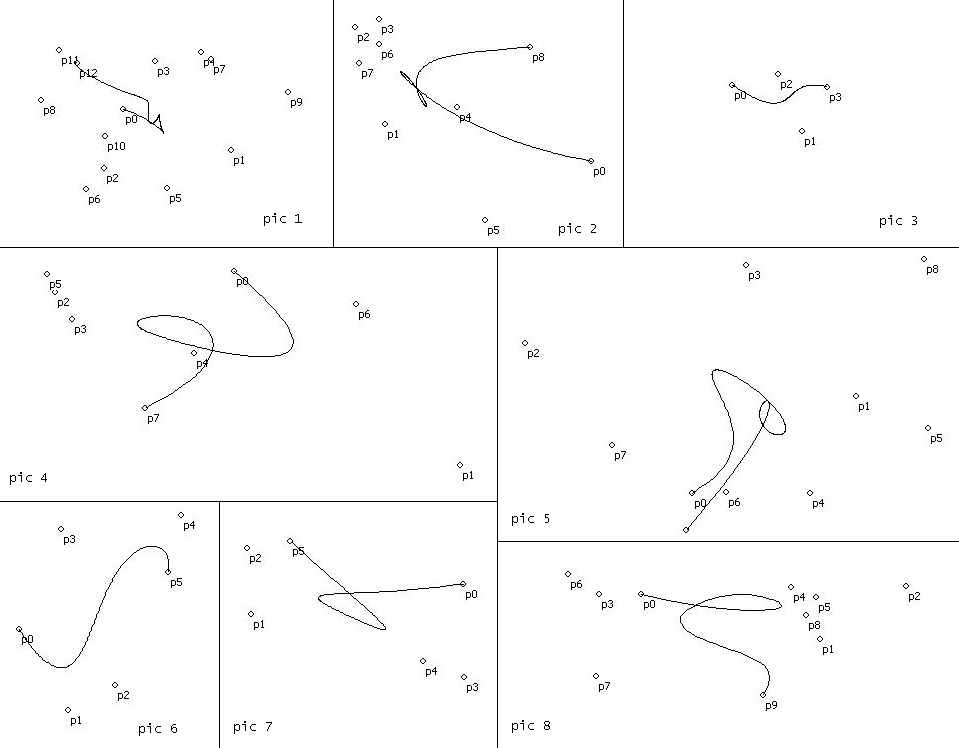

|
Skype: sea-kg E-mail: mrseakg@gmail.com Skills:
|
||
Project: bezier-curveProgramming languages: C++ (VCL, Builder)Technologies: OOP Description: calculate and show bezier curve. Sources: https://github.com/sea-kg/bezier-curve  |
||
Project: BottleFSProgramming languages: Java, bash, gradle, debTechnologies: Java, Http-server, lucene, JSON Description: backend for file-storage (downloading by url) Sources: https://github.com/sea-kg/BottleFS |